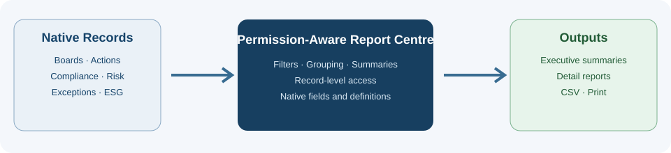

24 permission-aware reports across Board, Secretariat, Compliance, Risk, Ethics, Exceptions and Sustainability.
Data is retrieved through native permission-aware list queries. A report can only return records the current user is allowed to read. Report limit: 5,000 rows per run in this release.

| Report | Source DocType | Description | Fields |
|---|---|---|---|
Board Register & Governance Profileboard_register | Board | Board composition, status, governance entity and operating parameters. | name, board_name, governance_entity, board_type, chair, secretary, effective_from, effective_to, board_status, meeting_frequency, minimum_members, maximum_members, quorum_requirement |
Board & Committee Meeting Calendarmeeting_calendar | Board Meeting | Upcoming and completed meetings, meeting type and quorum status. | name, meeting_title, governance_entity, board, committee, meeting_type, scheduled_start, scheduled_end, meeting_status, quorum_required, quorum_met, chair, secretary |
Meeting Quorum & Attendancemeeting_quorum | Board Meeting | Meeting quorum status and meeting-level attendance controls. | name, meeting_title, governance_entity, board, committee, scheduled_start, meeting_status, quorum_required, quorum_met |
Board Action Registerboard_actions | Board Action | Board action ownership, due dates, completion and evidence. | name, action_title, governance_entity, board, committee, meeting, assigned_owner, due_date, priority, action_status, progress_percent, completion_date, evidence_reference |
Board Action Aging & Overdueboard_action_aging | Board Action | Open actions grouped by priority, due date and aging. | name, action_title, governance_entity, assigned_owner, due_date, priority, action_status, progress_percent, completion_date |
Board Resolution & Voting Registerresolutions | Board Resolution | Resolution status, voting outcomes and implementation progress. | name, resolution_title, governance_entity, board, committee, meeting, resolution_date, resolution_status, voting_status, votes_for, votes_against, abstentions, total_votes, vote_result, implementation_status |
Board Committee Registercommittee_register | Board Committee | Committee structure, leadership, mandate term and status. | name, committee_name, governance_entity, board, committee_type, chair, secretary, effective_from, effective_to, committee_status, quorum_required |
Director Appointment & Term Trackerdirector_terms | Board Appointment | Director appointment status, independence, term expiry and exits. | name, governance_entity, board, board_member, appointment_type, director_classification, independence_status, position, appointment_date, term_start_date, term_end_date, appointment_status, resignation_date, retirement_date |
| Report | Source DocType | Description | Fields |
|---|---|---|---|
Governance Obligations & Compliance Calendarobligations | Governance Obligation | Governance obligations, due dates, owners and remediation. | name, requirement, governance_entity, obligation_period, due_date, responsible_owner, obligation_status, last_assessed_on, remediation_action |
Compliance Assessment Resultscompliance_assessments | Compliance Assessment | Assessment outcome, assessor, remediation status and due date. | name, obligation, governance_entity, assessment_date, assessor, assessment_result, assessment_status, remediation_due_date, remediation_action |
Corporate Filing Trackerfilings | Corporate Filing | Filing deadlines, responsible owners, submission and acceptance. | name, governance_entity, filing_requirement, filing_period, due_date, responsible_owner, filing_status, submitted_on, accepted_on, filing_reference |
Annual Return Statusannual_returns | Annual Return | Annual return due dates, filing status and company profile details. | name, governance_entity, reporting_year, due_date, annual_return_status, filed_on, filing_reference, directors_count, shareholders_count, share_capital |
Policy Review & Acknowledgement Trackerpolicy_reviews | Governance Policy | Policy lifecycle, review due dates and acknowledgement requirements. | name, governance_entity, policy_title, policy_code, version_number, policy_owner, effective_date, next_review_date, policy_status, acknowledgement_required |
| Report | Source DocType | Description | Fields |
|---|---|---|---|
Governance Risk Registerrisk_register | Governance Risk | Inherent/residual risk profile, treatment and owners. | name, governance_entity, risk_title, risk_category, inherent_likelihood, inherent_impact, inherent_score, residual_likelihood, residual_impact, residual_score, treatment, treatment_due_date, risk_status, control_owner |
Control Testing & Assurancecontrol_assurance | Governance Control | Control design and operating effectiveness, testing and next test dates. | name, governance_entity, control_name, risk, control_type, frequency, control_owner, design_effectiveness, operating_effectiveness, last_tested, next_test_date, control_status |
Conflict of Interest Registerconflicts | Conflict of Interest Declaration | Conflict declarations, review, mitigation and renewal tracking. | name, governance_entity, board_member, board, committee, declaration_date, declaration_period, conflict_category, conflict_type, related_party, declaration_status, reviewed_by, reviewed_on, renewal_date |
Related Party Interest Registerrelated_parties | Related Party Interest | Related party interests, relationship, review and resolution. | name, governance_entity, board_member, related_party_name, relationship, interest_type, effective_date, review_date, interest_status, resolution |
Governance Exception Register & Analysisexceptions | Governance Exception | Exception severity, status, assignment, overdue and resolution. | name, source_doctype, source_name, exception_type, title, due_date, overdue_days, risk_score, severity, status, assigned_to, routing_status, resolved_on, closed_on |
| Report | Source DocType | Description | Fields |
|---|---|---|---|
Sustainability Disclosure Readinessesg_readiness | Sustainability Disclosure Assessment | Disclosure applicability, readiness, data/evidence/narrative completeness and gaps. | name, governance_entity, reporting_period, disclosure, applicable, assessment_status, readiness_percent, data_points_required, data_points_complete, evidence_required, evidence_complete, narrative_required, narrative_complete, owner, due_date, gap_summary |
Sustainability Data Collection Workloadesg_tasks | Sustainability Data Collection Task | Data collection tasks, workload, ownership and progress. | name, governance_entity, metric, reporting_period, disclosure, task_type, due_date, responsible_owner, task_status, data_point |
Sustainability Targets & Progressesg_targets | Sustainability Target | Baseline, target, current performance and progress toward ESG goals. | name, governance_entity, metric, target_title, baseline_value, baseline_year, target_value, target_year, target_direction, unit, current_value, progress_percent, target_status, target_owner, initiative |
GHG Emissions Inventoryghg_emissions | GHG Calculation | Emissions by source and period, quantity, factor and data quality. | name, governance_entity, emission_source, reporting_period, activity_quantity, unit, emission_factor, emissions_kgco2e, emissions_tco2e, methodology, data_quality |
Materiality Assessment Statusmateriality | Materiality Assessment | Materiality assessment completion and configured thresholds. | name, governance_entity, reporting_period, methodology, assessment_status, impact_threshold, financial_threshold, completed_on, overall_summary |
Sustainability Report Lifecyclesustainability_reports | Sustainability Report | Report readiness, status, publication, assurance and revision. | name, governance_entity, reporting_period, frameworks, report_status, report_owner, prepared_date, published_date, readiness_percent, missing_sections, assurance, current_revision, finalized_at, published_at |
| Action | Owner | Due date | Priority | Status | Progress |
|---|---|---|---|---|---|
| Publish approved budget | Finance Director | 15-Dec-2026 | High | Open | 20% |
| Review risk appetite | Risk Committee | 30-Nov-2026 | Medium | In Progress | 60% |
| Filing | Entity | Due date | Owner | Status |
|---|---|---|---|---|
| Annual Return | Example Holdings Ltd | 30-Nov-2026 | Company Secretary | Overdue |
| Disclosure | Readiness | Data | Evidence | Owner |
|---|---|---|---|---|
| Governance Oversight | 85% | Complete | 2/2 | Company Secretary |
| GHG Emissions | 55% | Partial | 1/3 | Sustainability Officer |